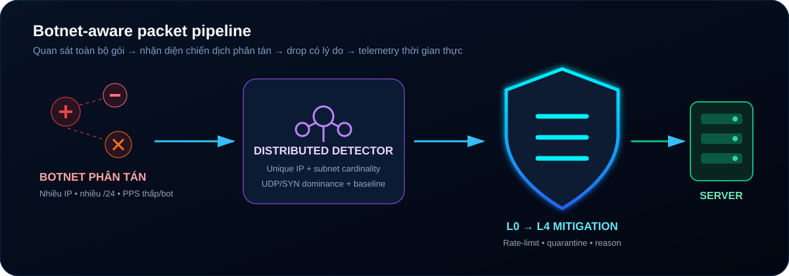

Lớp lọc gói WinDivert dành cho Game Server (UDP/TCP), Web Server & REST API, nhận diện SYN Flood, UDP Query Spam, Amplification, Carpet Bombing và botnet phân tán nhiều subnet.
State Store Đồng Thời
Cửa Sổ Phát Hiện
Bảo Vệ Toàn Bộ Dải Cổng
Detector đếm độ phân tán IP/subnet trên cửa sổ một giây và kết hợp tỷ lệ UDP/SYN, thay vì chỉ chờ từng IP tự vượt giới hạn.

Mọi gói tin độc hại từ Internet sẽ bị phân tích và triệt tiêu ngay lập tức trước khi chạm vào cổng ứng dụng máy chủ của bạn.
Whitelist ưu tiên, blacklist tự động khóa và tra cứu dải IPv4 Việt Nam bằng binary search khi Geo-IP được bật.
Hủy bỏ các gói tin TCP/UDP bị dị dạng, cờ TCP không hợp lệ (XMAS, NULL scan), và triệt tiêu đòn phản xạ khuếch đại DNS 53, NTP 123, SSDP 1900.
Tự động quét và phát hiện các cổng đang lắng nghe thực tế trên Windows (1-65535). Mọi gói tin gửi vào cổng đóng sẽ bị hủy tại chỗ, bảo vệ CPU máy chủ.
Theo dõi trạng thái SYN/ACK, giới hạn tốc độ theo IP/subnet và dọn kết nối treo để giảm SYN Flood, ACK Flood và Slowloris.
Phân tích sâu chữ ký gói tin (DPI), kiểm soát Token Bucket 120 PPS/luồng, chống bão truy vấn Server List (A2S, SAMP, FiveM query flood) và chống Carpet Bombing /24.
Chuyển đổi linh hoạt hoặc kết hợp đồng thời cả Game Server và Web Server chỉ với 1 click chuột trên Web SOC Dashboard.
Tối ưu hoàn hảo cho máy chủ chạy cả Game Server (UDP) lẫn Website / REST API (TCP) cùng một lúc.
Tối ưu chuyên sâu cho toàn bộ các thể loại Game Server thời gian thực (UDP Realtime).
Tối ưu cho Web Hosting, REST API, Microservices và WebSocket (HTTP/1.1, HTTP/2, HTTPS).
Chế độ phòng thủ nghiêm ngặt cao nhất dành cho các mục tiêu đang bị tấn công dữ dội.
Trải nghiệm cách ma trận WAF-Shield phân loại và hủy các gói tin độc hại (đỏ) trong khi vẫn cho các gói tin người dùng hợp lệ (xanh) đi qua mượt mà.
Hỗ trợ đầy đủ Windows Server 2012, 2012 R2, 2016, 2019, 2022, 2025 và Windows 10, Windows 11 x64.
Gói cài đặt tự chứa đầy đủ mã thực thi, driver NDIS WinDivert, cơ sở dữ liệu Geo-IP Việt Nam và kịch bản dịch vụ tự động.
Mở PowerShell quyền Administrator trên VPS và dán lệnh sau:
iwr -useb https://raw.githubusercontent.com/hoangtuvungcao/Anti_DDoS_Windown/main/WAF-Shield-Windows-Release.zip -OutFile WAF-Shield.zip; Expand-Archive WAF-Shield.zip -DestinationPath C:\WAF-Shield -Force; cd C:\WAF-Shield\WAF-Shield-Deploy; .\CHAY_WAF.bat
Sử dụng Git Command để clone đầy đủ source code và công cụ:
git clone https://github.com/hoangtuvungcao/Anti_DDoS_Windown.git cd Anti_DDoS_Windown/WAF-Shield-Deploy .\CHAY_WAF.bat
Hướng dẫn chi tiết từ cách chạy trực tiếp, cài đặt dịch vụ ngầm 24/7 đến tùy biến file cấu hình.
Dành cho kiểm tra nhanh trạng thái lưu lượng và hiệu năng máy chủ khi đang kết nối Remote Desktop:
WAF-Shield-Deploy/ vào ổ đĩa trên VPS (ví dụ C:\WAF-Shield).CHAY_WAF.bat (hoặc chuột phải chọn Run as Administrator).http://localhost:8080 để vào Web SOC Dashboard.WAF sẽ tự động khởi động cùng hệ điều hành Windows ngay khi VPS bật nguồn mà không cần bạn phải đăng nhập Remote Desktop:
Bước 1: Chuột phải vào 'CAI_DAT_SERVICE.bat' -> Chọn 'Run as Administrator' Bước 2: Chuột phải vào 'BAT_SERVICE.bat' -> Chọn 'Run as Administrator' để chạy ngầm! Khi cần tạm dừng: Chạy 'TAT_SERVICE.bat' Khi muốn gỡ hoàn toàn: Chạy 'GO_BO_SERVICE.bat'
Các lệnh tương tác dòng lệnh hữu ích khi bạn quản trị VPS từ xa qua SSH hoặc Terminal:
# Khởi động dịch vụ WAF net start "WAFGameService" # Tạm dừng dịch vụ WAF net stop "WAFGameService" # Kiểm tra trạng thái dịch vụ WAF sc query "WAFGameService" # Kiểm tra các cổng TCP/UDP đang được bảo vệ netstat -ano | findstr "LISTENING" # Kiểm tra kết nối Web SOC Dashboard Test-NetConnection -ComputerName 127.0.0.1 -Port 8080
Giao diện Web SOC Dashboard tích hợp sẵn trong file waf-game.exe cho phép bạn theo dõi và điều khiển toàn bộ ma trận phòng thủ:
Tùy chỉnh thông số phòng thủ phù hợp với cấu hình máy chủ của bạn và tải file config.json về: